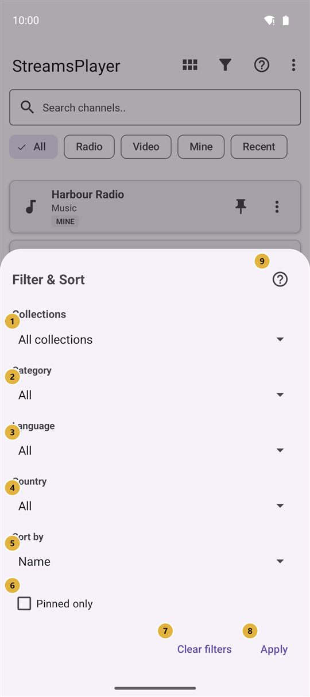
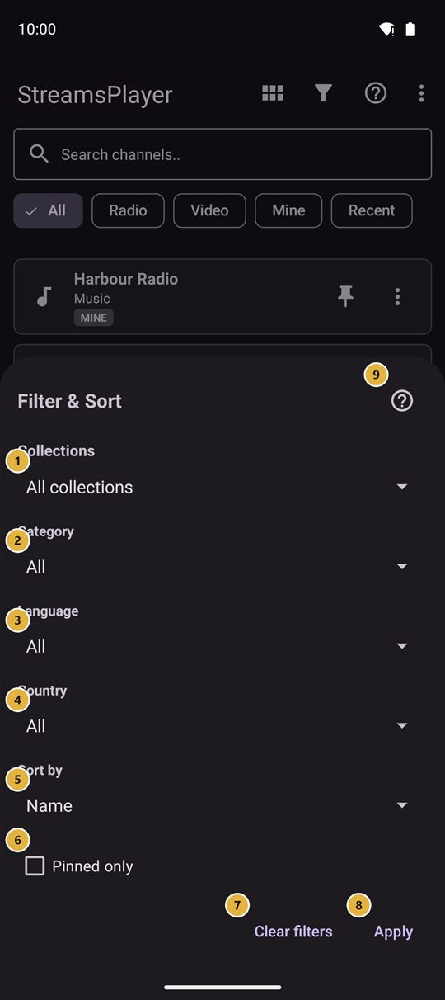

Filter & Sort
What this is for
Narrow a long channel list to the stations you want and choose the order they appear in. The sheet opens over the main screen and the list changes when you press Apply.


In this order
- Pick a collection 1 if you want one ready-made group of channels.
- Narrow further by category 2, language 3 and country 4. Each list offers only values that exist in your channels.
- Choose the order in Sort by 5.
- Tick Pinned only 6 to see just the channels you pinned.
- Press Apply 8. To start over, press Clear filters 7.
The elements
1CollectionsA ready-made group of channels.
Choose one collection to see only its channels, or All collections to see them all.
- Undo
- Choose All collections.
2CategoryThe kind of programme.
Music, news, talk and so on, as the channel catalog names them. All keeps every category.
- Undo
- Choose All.
3LanguageThe language of the channel.
Shows only channels in the language you choose. All keeps every language.
- Undo
- Choose All.
4CountryWhere the channel is from.
Shows only channels from the country you choose. All keeps every country.
- Undo
- Choose All.
5Sort byThe order of the list.
By name, topic, language or country, or with the most recently played or added channels first. The order applies below the pinned channels, which always stay on top.
- Undo
- Choose another order and press Apply.
6Pinned onlyOnly the channels you pinned.
A quick way to your favourites. Pinned channels stay at the top of the list in any case; this box hides the others.
- Undo
- Untick it and press Apply.
7Clear filtersDrops every filter and closes the sheet.
The list returns to all channels in the order you chose last. The search text is cleared as well.
- Undo
- Open the sheet and set the filters again.
8ApplyShows the list you set up.
Applies the collection, the category, the language, the country, the order and the pinned box together and closes the sheet. The bar above the list names what is on.
9HelpOpens this page.
The sheet stays open under the page; Back returns to it.
- Shortcut
- F1